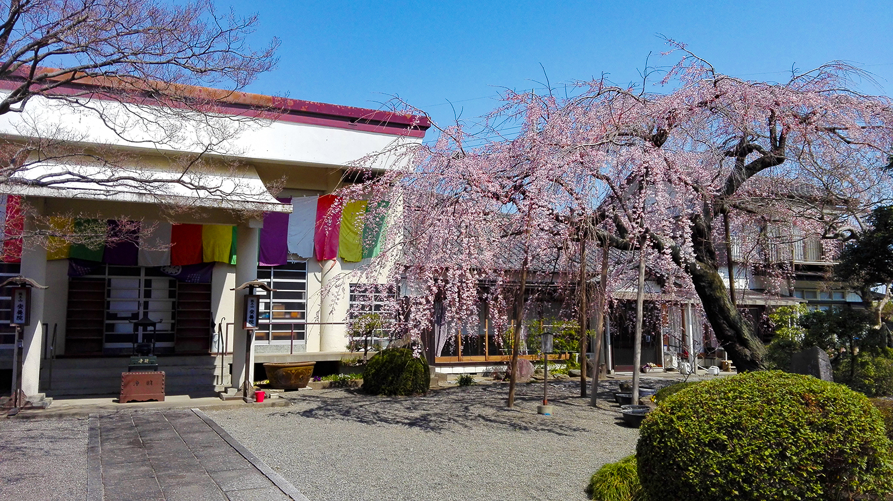
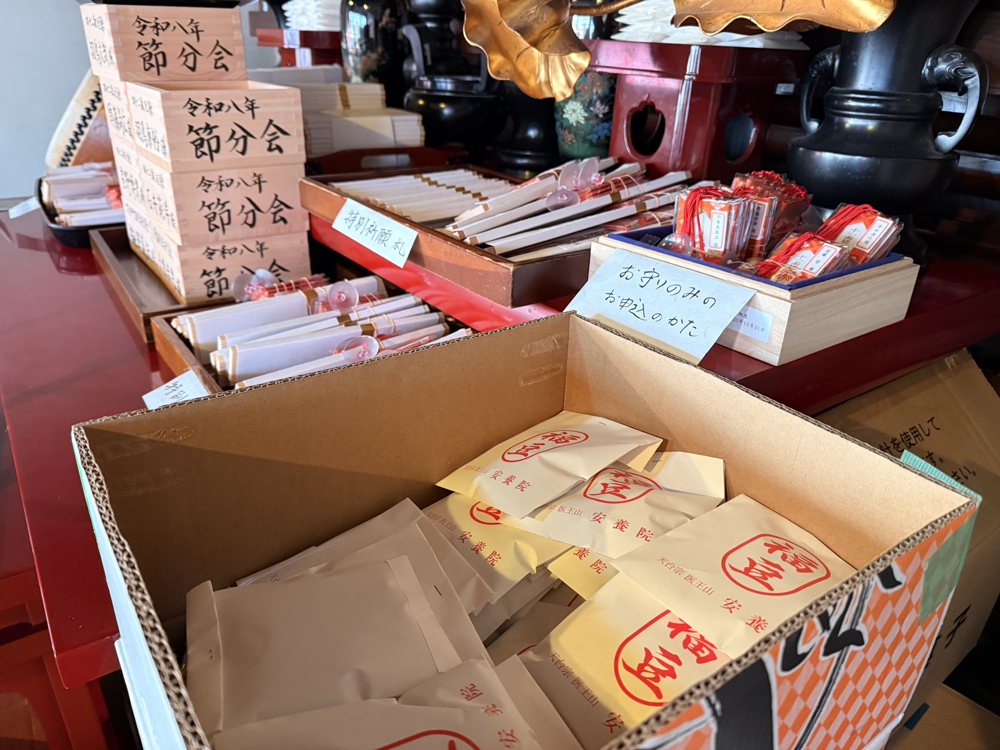

Information
2026.08.16 10:30 更新
台風18号の接近で安全の確保が難しいため、本日の灯籠流しおよび公民館への集合を中止いたします。
手作り灯籠は、今後活かせる方法を検討しておりますので、大事に保管なさってください。
本日はご自宅で安全にお過ごしくださいますようお願い申し上げます。

Our Temple
安養院は正式名称を「医王山 安養院 真福寺」といいます。
室町時代に開山し、江戸時代に現在の地に再建されました。
明治7年には本堂が笂井小学校の礎となり、安養院は地域の歴史と深く結びついています。
これからも地域の拠り所として、次の世代へと引き継いでいきます。
Services

厄除け・家内安全・病気平癒など様々な御祈願を随時承っています。節分会では護摩祈祷にて厄を焼き払い、安泰をお祈りいたします。お札やお守りのご依頼も受け付けております。
詳しく見るACCESS